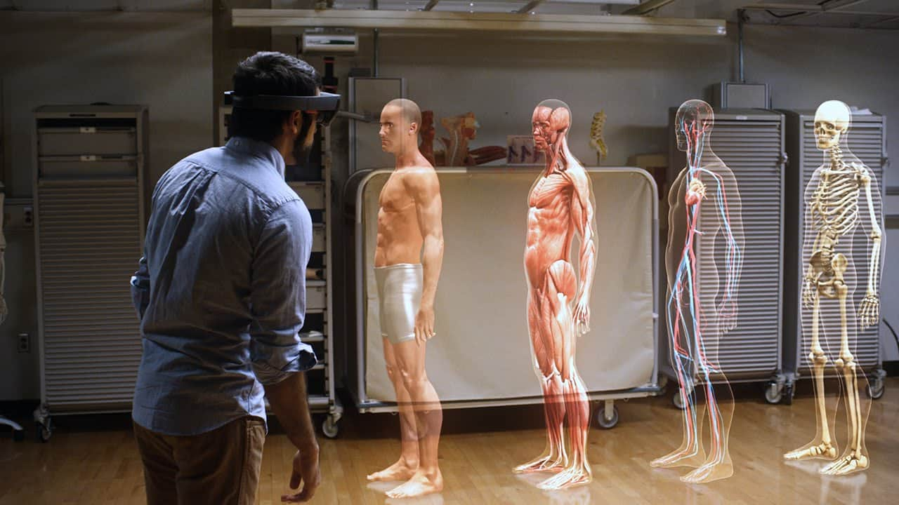
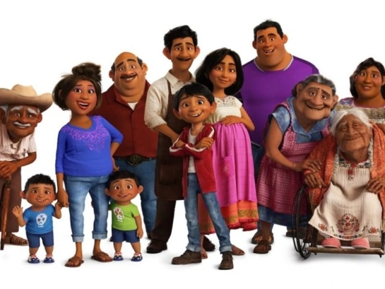
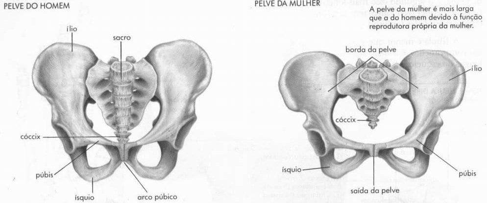
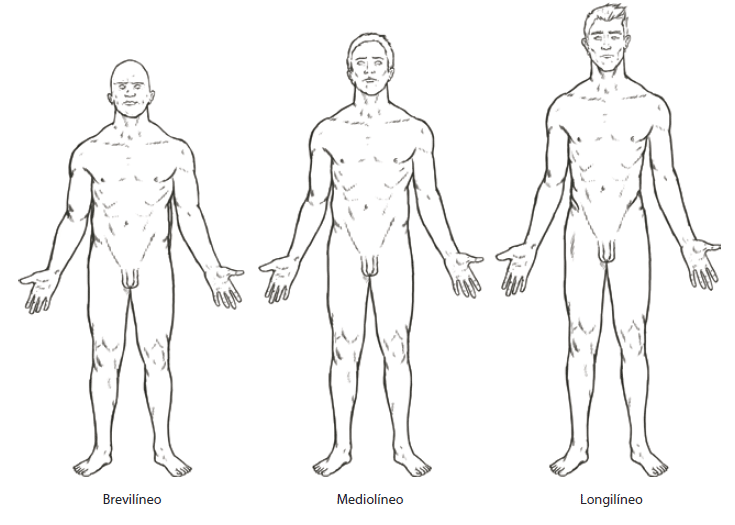
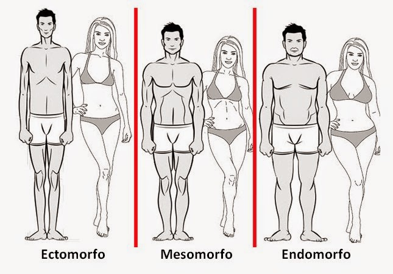

No seu conceito mais amplo, a anatomia é a ciência que estuda, macro e microscopicamente, a constituição, estrutura e o desenvolvimento dos seres organizados.
Especificamente, a anatomia (ana = em partes; tomein = cortar) macroscópica é estudada pela dissecação de peças previamente fixadas por soluções apropriadas.
Com a descoberta do microscópio desenvolveram-se ciências que, embora constituam especializações, são ramos da anatomia.
Assim, a:
Citologia (estudo da célula);
Histologia (estudo dos tecidos e de como estes se organizam para a formação de órgãos);
E a Embriologia (estudo do desenvolvimento do indivíduo).
Do mesmo modo poder-se ainda considerar:
Anatomia Radiológica (que estuda os órgãos, quer no vivente, quer no cadáver, por meio dos raios-x);
Anatomia Antropológica (que se ocupa dos tipos raciais);
Anatomia Biotipológica ou Constitucional (que se ocupa dos tipos morfológicos constitucionais);
Anatomia Comparativa (que se refere ao estudo comparado dos órgãos de indivíduos de espécies diferentes);
E uma Anatomia de Superfície (estudo dos relevos morfológicos na superfície do corpo do indivíduo).
A) Tegumentar;
B) Esquelético;
C) muscular;
D) nervoso;
E) circulatório;
F) respiratório;
G) digestório;
H) urinário;
I) genital/reprodutor — feminino e masculino;
J) endócrino;
I) sensorial.
Alguns sistemas podem ser agrupados formando os aparelhos, ex:
A) aparelho locomotor: constituído pelos sistemas esquelético e muscular;
B) aparelho urogenital: constituído pêlos sistemas urinário e genital (masculino ou feminino).

É uma diferença do normal que não prejudica em nada a função ou o indivíduo
Ex: ausência da veia intermédia do cotovelo.
É uma alteração morfológica, que difere do normal, trazendo prejuízo a função, porém é compatível com a vida.
Ex: ter uma dedo a mais na mão, fenda palatina, irmãos siameses, etc…
As variações anatômicas ditas individuais devem-se acrescentar aquelas decorrentes da idade, do gênero, da etnia, do tipo constitucional (biótipo) e do ambiente.
Estes são, em conjunto, denominados fatores gerais de variação anatômica.

Anatomicamente é o caráter de masculinidade ou feminilidade.
É possível reconhecer órgãos de um e de outro sexo, graças a características especiais, mesmo fora da esfera genital.

É a denominação conferida a cada grupamento humano que possui caracteres físicos comuns, externa e internamente, pelos quais se distinguem dos demais.
Conhecem-se, por exemplo, representantes das raças Branca, Negra e Amarela e seus mestiços, ou seja, “o produto do seu entrecruzamento”.
Sabe-se que fatores ambientais como o sol, clima e alimentação exercem influência no desenvolvimento do indivíduo (ex. pessoas com má nutrição podem não crescer o que poderiam).
É a resultante da soma dos caracteres herdados e dos caracteres adquiridos por influência do meio e da sua interrelação.
Os dois tipos extremos são chamados longilíneo e brevilíneo e sua comparação denota melhor as diferenças, tanto nos caracteres morfológicos internos quanto os externos, acarretando uma construção corpórea diversa.
Os longilíneos são indivíduos magros, em geral altos, com pescoço longo, tórax muito achatado ântero-posteriormente, com membros longos em relação à altura do tronco.
Os brevilíneos são indivíduos atarracados, em geral baixos, com pescoço curto, tórax de grande dia metro ântero-posterior, membros curtos em relação à altura do tronco.
Os mediolíneos também chamados de normolíneos apresentam caracteres intermediários aos dos tipos precedentes.

Ectomorfos: Tem uma constituição leve, com articulações pequenas e predominância de massa muscular magra.
Normalmente o ectomorfo tem membros longos e finos com a musculatura fibrosa.
Ombros tendem a ser mais finos que a cintura.
As pessoas que tem esse tipo de corpo, tem uma maior dificuldade para ganhar peso devido ao seu metabolismo rápido.
Mesomorfos: Tem como principal característica uma estrutura óssea grande, grandes músculos e um corpo naturalmente atlético.
Mesomorfos tem o melhor tipo de corpo quando o assunto é musculação.
Tem extrema facilidade em ganhar e perder peso.
Endomorfos: Ganham gordura com muita facilidade, geralmente tem membros mais curtos, com braços e pernas grossas.
Tem a musculatura forte, especialmente nas pernas.

{kind=link}
{kind=link}
{kind=link}
{kind=link}
{kind=link}